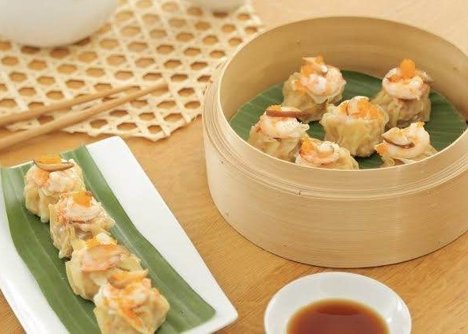
ขนมจีบ
ขนมจีบเป็นหนึ่งในอาหารติ่มซำที่มีชื่อเสียงและได้รับความนิยมไปทั่วโลก ด้วยรสชาติที่เป็นเอกลักษณ์และกรรมวิธีที่ประณีต ขนมจีบไม่ได้เป็นเพียงอาหาร แต่ยังสะท้อนถึงวัฒนธรรม ประเพณี และภูมิปัญญาของชาวจีนที่มีมายาวนานหลายศตวรรษ
อ่านเพิ่มเติม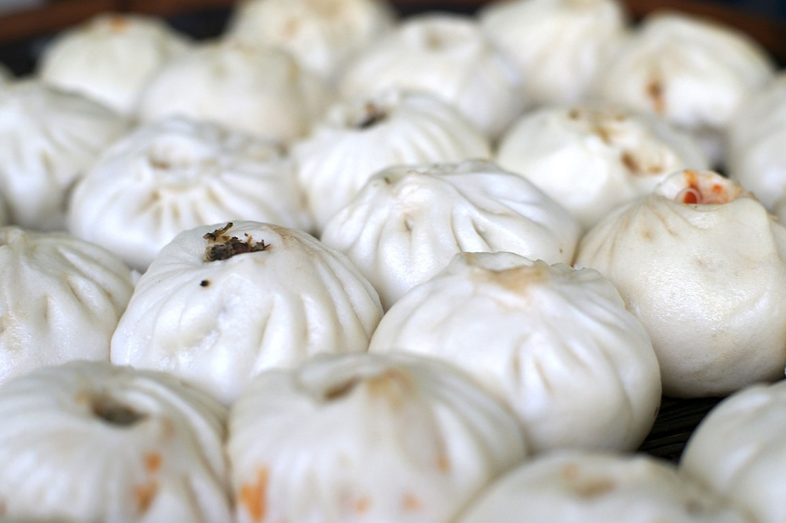
ซาลาเปา
ซาลาเปา ภาษาจีนเรียก เปาจึ (包子) หรือ เปา (包) ในประเทศจีน เปาจึแบ่งเป็นสองประเภทหลัก คือ ต้าเปา (大包; "เปาใหญ่") มักมีขนาดกว้าง 10 เซนติเมตร กับ เสี่ยวเปา (小包; "เปาน้อย") มักมีขนาดกว้าง 5 เซนติเมตร
อ่านเพิ่มเติม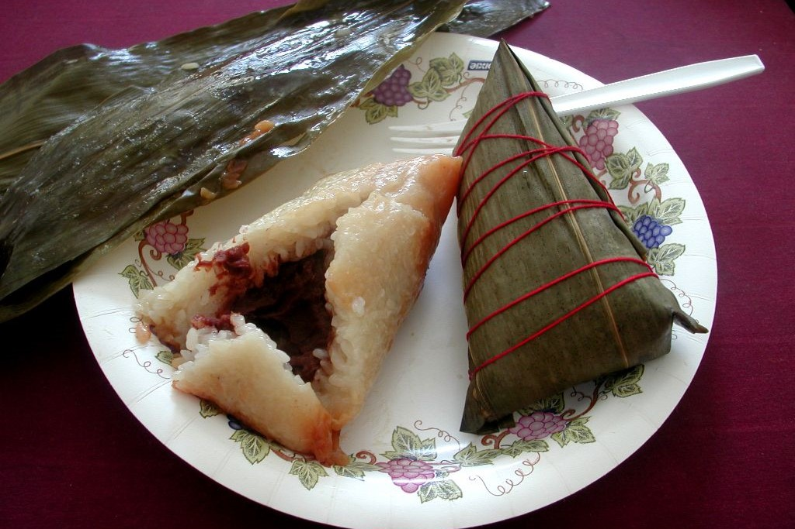
บ๊ะจ่าง
เป็นชื่ออาหารคาวประเภทข้าวต้มมัดชนิดหนึ่งของจีน ทำด้วยข้าวเหนียวนำมาผัดน้ำมัน มีไส้หมูเค็มหรือหมูพะโล้ กุนเชียง ไข่เค็มเฉพาะไข่แดง กุ้งแห้ง เห็ดหอม เป็นต้น ห่อด้วยใบไผ่แล้วนึ่งให้สุก
อ่านเพิ่มเติม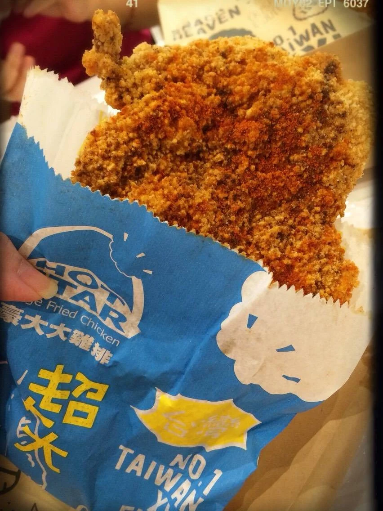
ไก่ทอดฮ่องกง
ไก่ทอดฮ่องกงเป็นอาหารยอดนิยมจากฮ่องกงที่ได้รับอิทธิพลจากอาหารจีนกวางตุ้ง ซึ่งขึ้นชื่อเรื่องเทคนิคการทำอาหารที่พิถีพิถัน ไก่ทอดสูตรนี้มีเอกลักษณ์ตรงที่ หนังกรอบ เนื้อนุ่ม ฉ่ำ ไม่อมน้ำมัน และมีกลิ่นหอมของเครื่องเทศ
อ่านเพิ่มเติม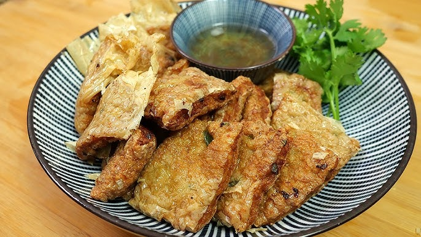
ฟองเต้าหู้ห่อกุ้งทอด
เมนูอาหารจีนทำง่าย ใช้เรียกน้ำย่อยได้ดีอย่าง ติ่มซำของทอดจุดสำคัญอยู่ที่ไส้กุ้ง เนื้อกุ้งต้องหวานเหนียวหนึบอร่อย ฟองเต้าหู้ที่ห่อควรทอดให้กรอบและไม่อมน้ำมัน
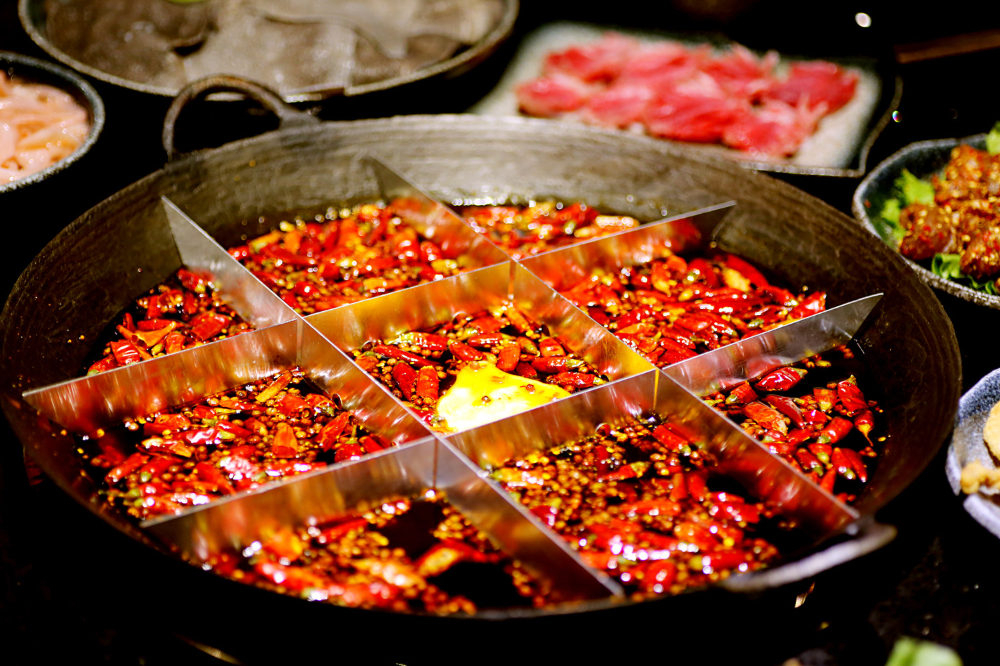
หม้อไฟเสฉวน
น้ำซุปพริกแห้งและพริกไทยเสฉวน เผ็ดและชาลิ้น ใส่เนื้อสัตว์ ผัก เต้าหู้ และเส้นต่างๆ
อ่านเพิ่มเติม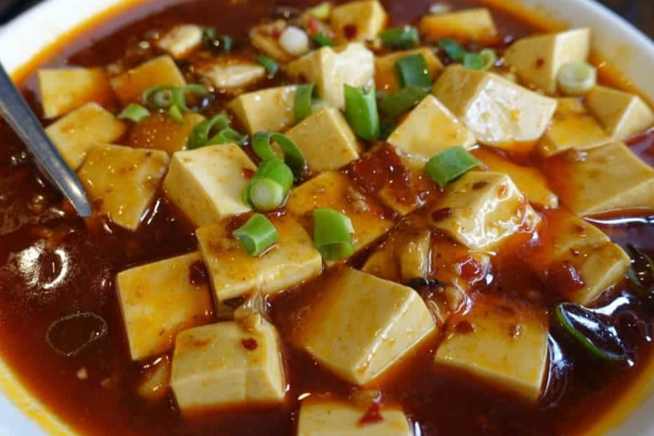
เต้าหู้เสฉวน
เต้าหู้ในซอสพริกและหมูสับ รสเผ็ด ชา เค็ม ใช้ซอสถั่วหมักจีน (Doubanjiang) เป็นส่วนประกอบหลัก
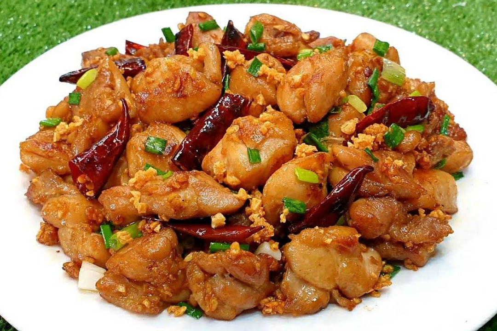
ไก่ผัดพริกแห้ง
ไก่ผัดถั่วลิสง พริกแห้ง และซอสเปรี้ยวหวาน มีกลิ่นหอมของพริกแห้งและพริกไทยเสฉวน
อ่านเพิ่มเติม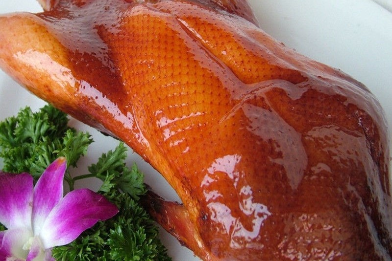
เป็ดย่างปักกิ่ง
เป็ดย่างหนังกรอบ เสิร์ฟกับแป้งห่อ ต้นหอม แตงกวา และซอสหวาน
อ่านเพิ่มเติม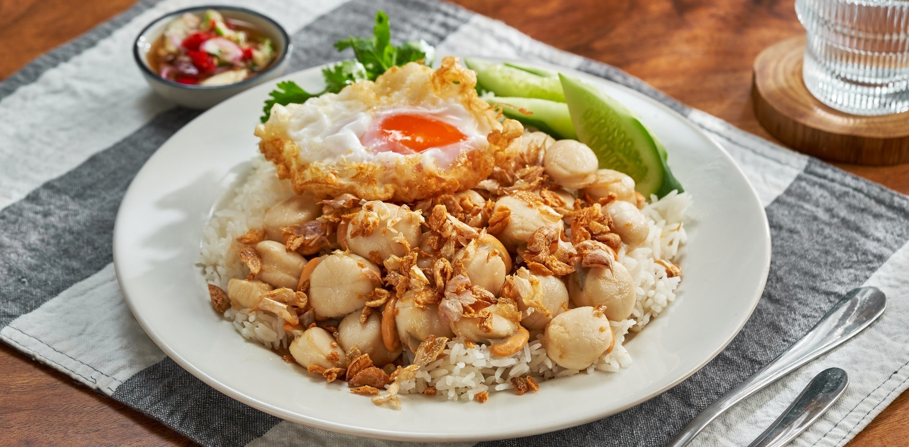
หอยเชลล์ผัดกระเทียม
หอยเชลล์ราดซอสกระเทียมนึ่ง หอมกลิ่นกระเทียม
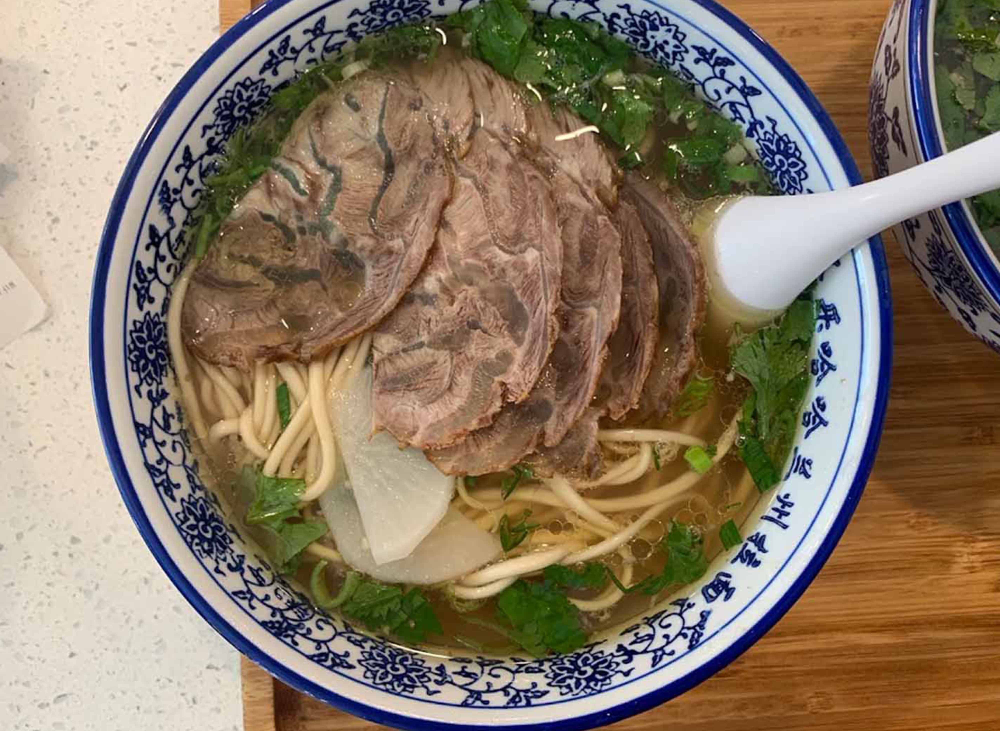
บะหมี่เนื้อหลานโจว
จุดเด่นของบะหมี่นี้คือ เส้นบะหมี่สดทำมือ ที่นวดและยืดเส้นด้วยเทคนิคพิเศษ ทำให้ได้เส้นที่เหนียวนุ่ม และน้ำซุปใสรสกลมกล่อมจากเนื้อวัวที่ตุ๋นกับเครื่องเทศจีน
อ่านเพิ่มเติม
หมูสามชั้นผัดพริกดอง
หมูสามชั้นตุ๋นกับพริกดอง รสเผ็ดเค็ม